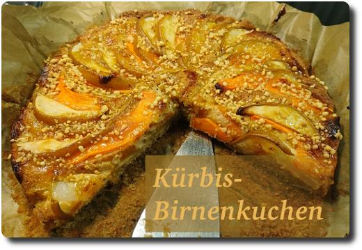

Kürbis-Birnenkuchen
Heute haben wir seit langem mal wieder gebacken. Etwas total neues. Einen Kürbis-Birnen-Kuchen. Suuuper lecker und passend zur Jahreszeit.
Zu zweit ging die Zubereitung ganz gut: ich habe den Teig gemacht, während meine bessere Hälfte den Kürbis und die Birnen malträtierte...
Das Rezept gibt's hier: https://www.kuechengoetter.de/rezepte/kuerbis-birnen-kuchen-8523
